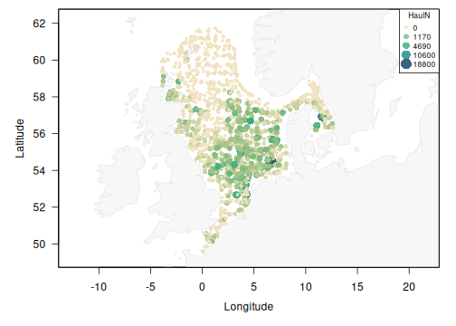

Makes working with ICES DATRAS extra easy!
DATRASextra is an R package that extends the functionality of the ICES DATRAS database and the DTU Aqua DATRAS R package, providing practical tools for downloading, cleaning, standardising, analysing, and visualising bottom-trawl survey data.
Key features include:
- Streamlined workflows for downloading, cleaning, and preparing DATRAS data
- Calculation and visualisation of swept area, catch rates, biomass, and numbers-at-length for custom length classes
- Support for reproducing key components of the FishGlob data-processing workflow
- Tools for species harmonisation, taxonomic standardisation, and exploratory diagnostics
Installation
DATRASextra can be installed from GitHub:
## Install the package
remotes::install_github("tokami/DATRASextra")Or the development version:
## Install the package
remotes::install_github("tokami/DATRASextra", ref = "dev")Note that if you want to install vignettes locally, you have to use an extra argument:
## Install the package with vignettes
remotes::install_github("tokami/DATRASextra", build_vignettes = TRUE)Getting started
A minimal end-to-end example using the bundled dab dataset (common dab, Limanda limanda, from the North Sea IBTS survey, 2020-2023). No download is required:
library(DATRASextra)
## Bundled example survey data
data("dab")
## Clean and harmonise the data, then derive total numbers per haul
dab <- clean_datras(dab)
dab <- add_total_numbers_by_haul(dab)
## Map haul-level catch rates in space
plot_datras_overview(dab, metric = "mean", value_var = "HaulN", transform = "sqrt")
The same workflow scales from this small example to the full database: replace data("dab") with a call to download_datras() to pull data directly from ICES DATRAS.
See the tutorial vignette for a complete walk-through: downloading data from the DATRAS database, performing recommended quality checks and data processing steps, and transforming survey observations into standardised numbers and biomass by species, haul, and length class for use in abundance and biomass index calculations.
The tutorial is available on the package website under Articles → Getting started: https://tokami.github.io/DATRASextra/articles/datrasextra-tutorial.html
If you installed the package with build_vignettes = TRUE, you can also open the tutorial directly from R:
vignette("datrasextra-tutorial")Overview
DATRASextra provides a set of functions that guide you through a typical workflow with the ICES DATRAS database: from discovering available surveys, to downloading, cleaning, checking, and enriching the data, to deriving standardised survey products and making quick plots. The main user-facing functions are grouped below by workflow stage.
Discover & access
| Function | Description |
|---|---|
list_surveys() |
List available surveys in the ICES DATRAS database. |
download_datras() |
Download the full or a filtered subset of the DATRAS database. |
read_datras() / write_datras()
|
Read and write DATRAS exchange files. |
Clean & prune
| Function | Description |
|---|---|
clean_datras() |
Clean and harmonise DATRAS data. |
prune_datras() |
Reduce the data by removing or filtering records. |
Derive haul-level variables
| Function | Description |
|---|---|
add_swept_area() |
Calculate swept area per haul by gear type. |
add_numbers_at_length() |
Numbers at custom length classes. |
add_weight_at_length() |
Weight at custom length classes. |
add_total_numbers_by_haul() |
Total numbers per haul. |
add_total_weight_by_haul() |
Total weight (biomass) per haul. |
add_species_info() |
Add taxonomic and species reference information. |
Quality control
| Function | Description |
|---|---|
check_lengths() |
Check length information and flag suspicious distributions. |
check_weights() |
Check weight information and length-weight consistency. |
check_outliers() |
Flag (and optionally remove) hauls with extreme values. |
Analyse, visualise & export
| Function | Description |
|---|---|
calc_stratified_index() |
Design-based stratified mean abundance/biomass indices. |
calc_spatial_indicators() |
Spatial distribution indicators. |
plot_datras_overview() |
Map haul locations and quantities (catch rates, species richness, etc.). |
plot_stratified_index() |
Plot stratified survey indices. |
as_table() |
Standardised long-format haul x species x length records. |
as_fishglob() |
FishGlob-compatible output format. |
For the complete list of exported functions, see the package reference index: https://tokami.github.io/DATRASextra/reference/
Getting help
All functions in DATRASextra are documented and include examples. Help pages can be accessed using help() or ?, for example:
?check_lengthsAdditional tutorials and worked examples are available on the package website, demonstrating common workflows and applications of DATRAS survey data: https://tokami.github.io/DATRASextra/
If your question is not answered by the package documentation or the pkgdown site, you are welcome to contact the maintainer, Tobias Mildenberger. If you find a bug or would like to request a feature, please open an issue on GitHub with: https://github.com/tokami/DATRASextra/issues/new/choose
Related software
DATRASextra was originally developed to extend the functionality of the R package DATRAS, which provides tools for accessing and working with ICES DATRAS survey data. While DATRASextra continues to build on some of this functionality, it has evolved into a broader framework for downloading, managing, processing, and analysing DATRAS data, with an increasing share of functionality implemented directly within the package.
An alternative R package for accessing DATRAS data is icesDatras, which is maintained by ICES and provides a direct interface to the DATRAS database.
For other regions, the surveyjoin package provides standardised access to multiple scientific bottom-trawl surveys in the Northeast Pacific, with similar goals of harmonising survey data across sources.
Funding
The development of DATRASextra was funded by the European Maritime and Fisheries Fund (EMFF) through the project: FISHMAP - FISH distribution and its role in fisheries Management Advice and marine spatial Planning (EFMVB-23-0031), which is co-financed by the EU through the Danish Maritime, Fisheries and Aquaculture Fund.